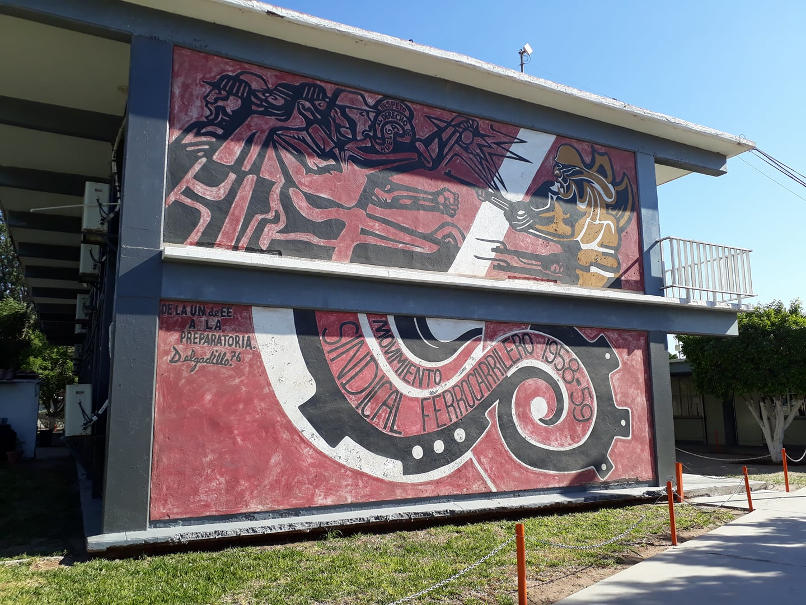
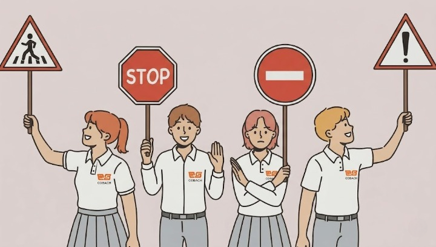
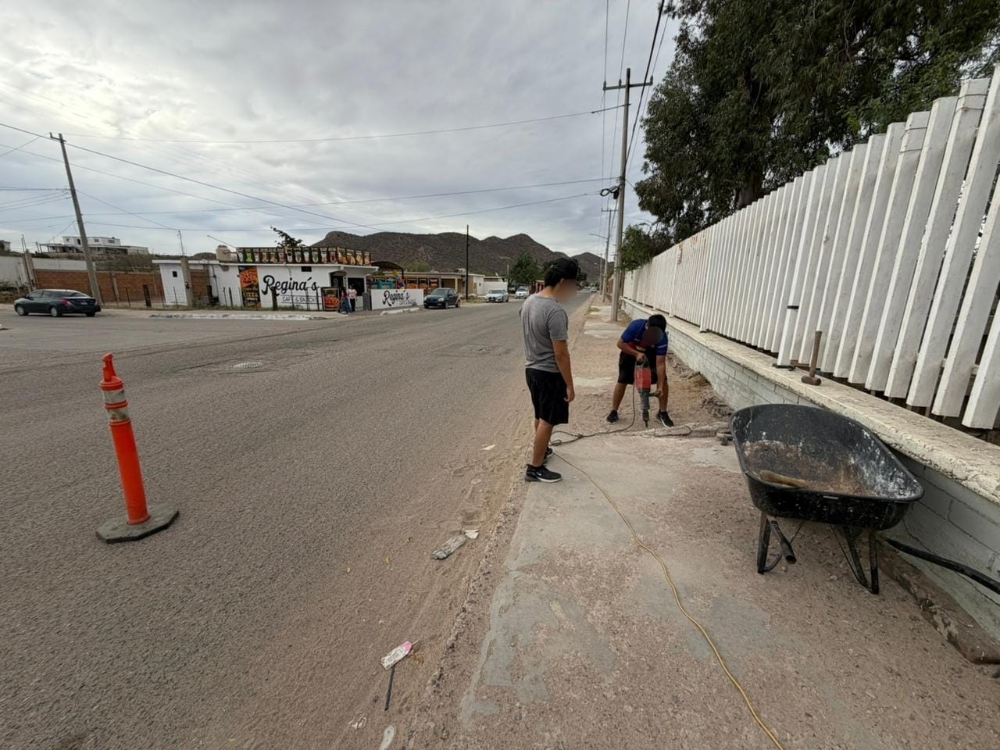
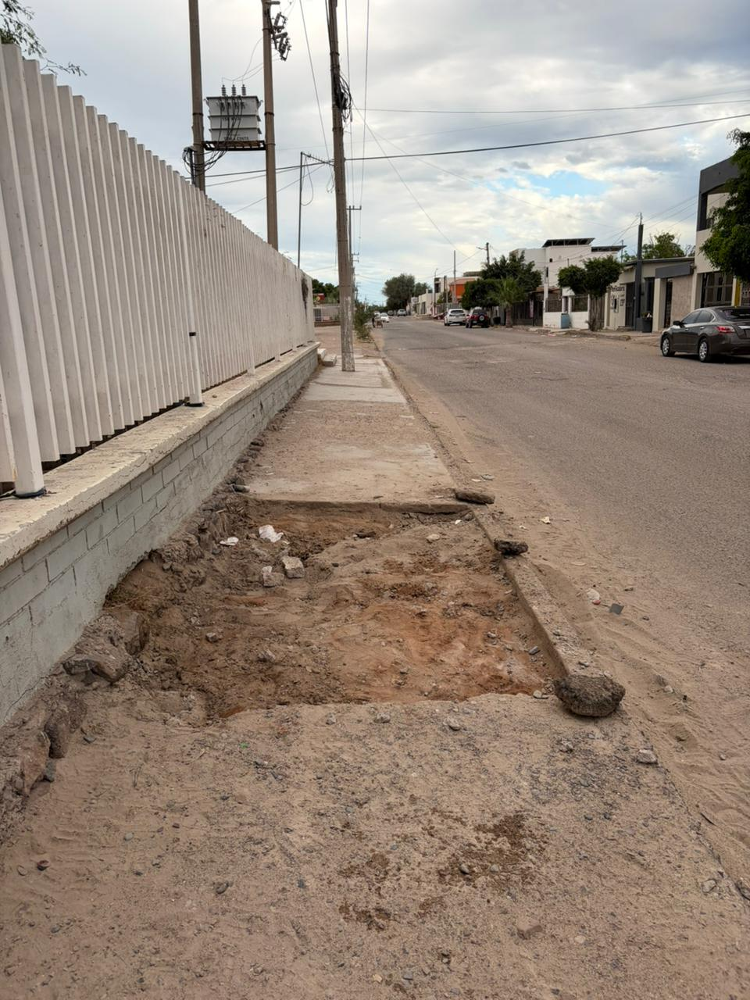

Presentación del Proyecto
El Proyecto Aula Escuela Comunidad (PAEC) constituye un pilar esencial en el Nuevo Marco Curricular Común de la Educación Media Superior. Su propósito fundamental es romper las barreras tradicionales del aula de clases para proyectar el conocimiento hacia soluciones tangibles que transformen de manera directa el contexto inmediato de nuestra institución educativa que en este caso es el plantel Empalme.

El Contexto de Nuestro Planteamiento
Durante el presente ciclo escolar, la comunidad estudiantil, en estrecha colaboración con el personal docente y las mesas directivas, identificó una problemática apremiante que compromete de forma diaria la integridad física y el orden social en los alrededores del plantel: las deficiencias críticas de infraestructura vial y la falta de señalización periférica.
Este sitio web ha sido estructurado por alumnos del plantel con la finalidad de transparentar las fases de diagnóstico, planeación, coordinación institucional y desarrollo de las obras de mitigación vial contempladas dentro de nuestro perímetro escolar.
Justificación y Diagnóstico Integral
Toda intervención comunitaria demanda un análisis riguroso de las causas que originan el conflicto. El crecimiento del parque vehicular, sumado al diseño desactualizado de los accesos principales del plantel, ha generado un escenario de riesgo sistemático durante los horarios de alta afluencia (entrada y salida de turnos).
Análisis de Riesgo Detectado
Mediante recorridos de inspección física y encuestas aplicadas a la comunidad del Colegio de Bachilleres, se constataron obstrucciones críticas en el libre tránsito peatonal causadas por estructuras en mal estado y la ausencia de delimitaciones claras para vehículos particulares y de transporte público.
Impacto Socioeducativo
Alinear la educación con la seguridad vial no solo previene desenlaces desafortunados, sino que dota al estudiantado de una sólida conciencia cívica. Apropiarse del espacio público y repararlo de forma colaborativa enseña a los jóvenes que la ciudadanía se ejerce activamente mediante la gestión e intervención directa.
Objetivos del Proyecto
A partir de las prioridades fijadas en las asambleas del PAEC, se definieron directrices claras orientadas a resolver las problemáticas de movilidad urbana e infraestructura en las inmediaciones del centro escolar:

- Agilizar la movilidad en el ascenso y descenso de alumnos: Optimizar los tiempos de espera y coordinar los flujos de tráfico vehicular para evitar los congestionamientos que paralizan las vías adyacentes en horas pico.
- Reducir accidentes en el perímetro escolar: Establecer una zona de amortiguamiento y protección mediante infraestructura preventiva que resguarde a peatones, ciclistas y usuarios de transporte.
- Fomentar la autonomía de los estudiantes al trasladarse: Garantizar banquetas transitables, cruces seguros y accesibilidad universal para que los alumnos puedan ingresar y retirarse del plantel a pie con total seguridad.
- Fortalecer el tejido social al involucrar a las familias y autoridades en un objetivo común: Consolidar canales de comunicación y corresponsabilidad entre los padres de familia, los cuerpos de tránsito municipal y los estudiantes.
Plan de Acción y Desarrollo Técnico
La ejecución material de esta iniciativa se divide en etapas secuenciales que comprenden la obra civil, el ordenamiento del espacio y la capacitación de los usuarios de la vía:
Fase Técnico y de Infraestructura
- Medición del área de conflicto: Levantamiento topográfico y de dimensiones del frente institucional para determinar los puntos de estrangulamiento vial.
- Soluciones del área de conflicto: Mesas de diseño técnico para trazar espacios eficientes y distribución de carriles.
- Demolición de banqueta de riesgo: Remoción de obstáculos físicos, registros sin tapa y concreto fracturado que ponían en peligro el libre andar peatonal.
- Balizamiento de área de estacionamiento: Aplicación de pintura de tráfico de alta resistencia para delimitar cajones reglamentarios, áreas exclusivas y cajones de servicio.
Fase de Señalización e Instrucción
- Señalamiento Interno: Colocación de señalética de evacuación, sentidos de circulación peatonales y puntos de reunión actualizados dentro del plantel.
- Señalamiento de área de ascenso y descenso: Instalación de discos restrictivos y preventivos visibles a distancia para marcar el tramo exacto donde los vehículos deben operar de forma rápida.
- Plática de Educación Vial: Talleres informativos de concientización impartidos en coordinación con agentes preventivos, enfocados en el respeto al peatón y límites de velocidad escolares.
Evidencias Fotográficas del Proyecto
A continuación se presentan los registros visuales recolectados durante las fases operativas en el plantel, acompañados por el informe analítico de actividades correspondiente:

Evidencia 1
Alumnos del plantel realizan la demolición y remoción de tramos de concreto dañados en la banqueta perimetral, utilizando herramientas mecánicas y de mano para eliminar los obstáculos físicos que ponían en riesgo la integridad y el libre tránsito de los peatones.

Evidencia 2
Vista del terreno nivelado y libre de escombros tras concluir la excavación del área crítica de la banqueta, preparando la superficie para el posterior colado de concreto uniforme y la reestructuración segura del acceso escolar.
Vinculación Escuela y Comunidad
La participación activa de la comunidad es clave para el éxito de la seguridad vial. Los esfuerzos técnicos carecen de impacto sostenible en el tiempo si no se acompañan de un cambio de conducta cultural por parte de los ciudadanos que confluyen cotidianamente en nuestro entorno.
Corresponsabilidad Ciudadana y Sustentabilidad
Este proyecto trasciende las bardas del Colegio de Bachilleres. Involucrar activamente a los vecinos del sector, los comerciantes locales y los prestadores de servicios de transporte ha sido prioritario.
Las mejoras logradas en infraestructura como el libre acceso de banquetas tras las demoliciones de áreas de riesgo benefician colateralmente al ciudadano común que transita por el sector, sentando un precedente de organización civil donde el plantel educativo actúa como el eje de transformación social de la colonia.